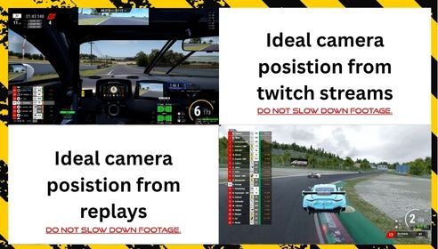

Licence Tiers
How drivers move up the ladderLoading tier list...
My Licence
Loading your profile…IFWL RACING LICENCE
—
IFWL-0000-00000
No Licence
Overall Score-
Consistency-
Race Risk-
Licence Points
0
No calling card selected
This card updates live as you edit your profile.
Next Race
Based on your licence and platformLoading…
Season Stats
Your race record this seasonRaces Attended-
Wins-
Podiums-
Best Finish-
Career Balance
Your IFWL economy this seasonLoading…
Your Qualification Ranking
How you compare to the field on the IFWL Licence server(s)Loading…
Edit Profile
Your driver details, appearance and licence tier requestAvailable from Active Racer access upward.
Separate multiple names with a comma only - never with quote marks. "Ben Leahy, Slayer" is correct. "Ben Leahy "Slayer"" is wrong and will not match.
Most drivers need to add two names here - one for entrylist-locked races, one for everything else. This is how your licence gets matched to race results, steward tickets, live timing and Performance stats, so it must be exact.
- Entrylist-enforced races (the normal league race weekend, run from a locked entrylist) show a fixed name that staff set for you. Find the exact spelling on Live Timings or your entrylist entry and add it exactly as shown - e.g.
Ben Leahy. New to Season 4 and can't find yours yet? That's expected - it only appears once your first race result has been uploaded to the Licence Centre database, still found the same way via Live Timings. - Non entrylist-enforced sessions (the IFWL Licence qualifying server, open practice, anything without a locked entrylist) show whatever name your ACC profile is actually set to in-game instead - add that one too, e.g.
Slayer. - Put them both in the box above separated by a comma:
Ben Leahy, Slayer. If you only ever see one of the two kinds of session, one name is enough - but if results ever go missing, this is almost always why: add the other name.
Shown as a badge on your Driver Directory card. This is set automatically when you claim your name from either server's laps list, or you can set it here directly.
Helps staff match you up faster during registration/entrylist checks. To find it: on SimGrid, click your profile icon or the drop-down menu top-right and select Edit Profile - your handle is shown right there (often with an @ symbol, or visible in your profile URL as thesimgrid.com/@yourhandle).
Helps staff match entrylists to your licence. To find it: open the Steam desktop app, click your profile name top-right, select Account Details - your 17-digit SteamID64 appears right below your account name.
Commentators only - shown on your Drivers to Watch card so commentary can say your name right on stream. Not shown anywhere public.
Drop or choose an image — JPG/PNG, 5MB max.
Drop or choose an image — JPG/PNG, 5MB max.
Recolours your own view of the whole Licence Centre - nav, buttons, borders. Only you see it; nobody else's view changes.
Switches your own view of the whole Licence Centre back to the original dark theme. Only you see it; nobody else's view changes.
🏆 Go Gold — Unlock Everything IFWL Has to Offer
Running IFWL costs over £200 every month — servers, databases, live timing infrastructure, and everything else behind the scenes that keeps race day running smoothly. Every Gold pledge goes straight toward keeping that running, and unlocks the full experience in return: your own photo and header images, full race breakdowns with Consistency and Race Risk, your live ranking in the qualification standings, and more.
Upgrade to Gold on Patreon →Shown on your licence card below your points. Updates live as you pick one - Save changes to make it permanent.
Optional. Add a username or paste a link - we only keep the username, and each button goes to the right site. Your socials show as buttons on your Driver Directory card and in your driver profile popup, for as long as you're a Silver or Gold Patron.
Race team is now managed under Racing > My Race Team, not here.
Bio, race team and uploaded images unlock with Silver / Gold Patreon. Join Patreon
Request a Licence Review
Ask staff to review you for a higher tier without waiting on race data.
Drivers to Watch
Top pace and rising-potential drivers per tier, for commentaryLoading…
Driver Overview
Search any driver for their full picture: pace, consistency, season record and a highlight sheet for every raceDriver Lookup
Every licensed driver matching a tier and platform - for comms/registration referencePick a tier and/or platform above.
IFWL Seasons
Season dates, training weeks and breaksLoading the season calendar…
Seasons run Monday to Sunday and all dates are UK dates. A training week is a week with no championship race. Seasons marked Planned are drafts and can still change.
Join the IFWL Team
Apply to become a Steward, Moderator or part of the Ops Team
Please read before you apply
We do not take on anyone who is staff, or in any elevated role, in another racing league. That includes admin, moderator, steward, race director, marshal, league owner or similar roles in any other league or racing community.
If you currently hold a role like that, please do not apply. Applications that are found to break this rule will be declined.
Race Updates
FIA-style notices every driver must read and confirm. Owner and people the Owner allows (e.g. the Head Steward) can send; all staff can see who has confirmed.Loading…
Team Applications
Applications to join as Steward, Moderator or Ops Team (Owner and Ops Manager only)Loading…
Available Races
Invite-only SimGrid events open to your current licence tierThis week · all games
Tap an event to jump to its cardPick a game above to see its races.
Race Results
Loading season window…Loading races…
AC Rally Results
Every AC Rally Knockout event that's underway or finished - stage times, round-by-round results and the eventual championLoading events…
RL 3v3 Results
Every RL 3v3 Knockout event that's underway or finished - squads, match scores and the eventual champion squadLoading events…
Claim Your PC Server Laps
Recognise your name below? Link it to your licence in one click.Everyone who has driven on the IFWL PC Licence server shows up here. If one of these is you, click "This is me" to link it — that's exactly how your licence gets connected to your race results, steward tickets and Performance stats. Once a name is claimed by anyone, it disappears from this list for everyone else.
Loading…
Claim Your Console Server Laps
Recognise your name below? Link it to your licence in one click.Everyone who has driven on the IFWL Console Licence server shows up here — tracked separately from PC. If one of these is you, click "This is me" to link it.
Loading…
Submit a Ticket
Report an incident to IFWL stewards
Important: Ticket submissions are final. Once submitted, a ticket cannot be withdrawn or edited. Please review everything carefully before continuing.
⚠️ Evidence format requirement
Any proof or video submitted must be at normal playback speed. Footage that has been sped up or slowed down will not be counted as valid evidence, and the ticket will be voided regardless of what it shows.
Any proof or video submitted must be at normal playback speed. Footage that has been sped up or slowed down will not be counted as valid evidence, and the ticket will be voided regardless of what it shows.
Up to 100MB, one video per ticket. Uploads directly to this ticket - no external hosting needed. Must be at normal speed - see notice above.
⚠ Appealing a Ticket / Adding a Statement
Already have a ticket open against you (or someone else) and want to respond before stewards rule on it? Use this to add your statement or appeal - not the form above.
⚠ Appeal a Ticket Here →Raise a Concern
For anything that isn't a steward ticket
This is NOT a Steward Ticket. There's no accused driver here, and this doesn't go to stewards for a ruling. Use Submit a Ticket instead if you want to report another driver for something that happened in a specific race.
Use Raise a Concern for anything that doesn't fit that - for example: the server didn't seem correctly set up, you think a steward needs to be made aware of something that's now past the 24-hour ticket window, or you want to raise a general concern about the grid as a whole. There's no accused party and no ruling attached - it's simply a message to League Owner or Staff.
Use Raise a Concern for anything that doesn't fit that - for example: the server didn't seem correctly set up, you think a steward needs to be made aware of something that's now past the 24-hour ticket window, or you want to raise a general concern about the grid as a whole. There's no accused party and no ruling attached - it's simply a message to League Owner or Staff.
"Staff" reaches every Ops Manager and Steward. "League Owner" is only ever visible to the Owner role - not Ops, not Stewards.
Before you submit your ticket

IFWL does not enforce a mandatory camera angle requirement, as our championships run across both console and PC and we appreciate that not every driver has the same capture options available.
That said, our stewarding team strongly encourages drivers to provide as much detail as possible in the incident summary, the video footage submitted, and any statements provided.
Where possible, we'd greatly appreciate both the reporting driver and the accused driver sharing footage from a chase/replay camera angle - it helps our team clearly see steering, throttle, brake and general driver input.
We fully understand this may not always be possible - but in general, the more information our stewards have, the better equipped they are to review each incident fairly and accurately.
🎉 You've Been Awarded a Trophy!
Head over to My Trophy Cabinet to dust it off, give it a spotlight, and admire your new addition!
📊 Your Ranking Has Changed
Every lap counts - keep putting time in on the IFWL Licence server to climb higher, or head over to the Fuel Calculator and Race Results to sharpen your strategy for next time.
🏁 Raceday Info
Steward Ticket History
Every ticket on your record, every status, regardless of outcome - detail shown depends on your Patreon tier (your Overall Score, Consistency and Race Risk are on your licence card above)Le Mans Ultimate (LMU)
Optional sub-licences for LMU classes - separate from your main IFWL licence tier
LMU support here is still very early. The data we're currently able to pull out of Le Mans Ultimate is very limited compared to what we get from ACC - there's no Consistency, Race Risk, or full session breakdown for LMU yet. We'll keep expanding what this page can show as LMU (and its APIs) mature. For now, this is just a way to flag which LMU classes you actually race, so staff and future features can find you.
Loading…
IFWL Trophy Cabinet
Every season's top 3 - permanently on displayLoading…
My Trophy Cabinet
Every trophy you've won - drag them to arrange your own displayLoading…
Race Teams
Apply to create a team, or request to join one that's already activeLoading…
Ops: Manage All Race Teams
Full edit access to any team, plus pending application approvalPending Applications
Loading…
Active Teams
Loading…
Fuel Calculator
Full race strategy - stint splits, fuel load pace effect, wet/dry consumption, mandatory pit stops🏆 Gold Patreon Perk — Full Race Strategy Calculator
The Fuel Calculator is a Gold Patreon perk - full lap-by-lap race simulation, stint splitting, fuel-load pace modelling, wet/dry consumption, mandatory pit stop planning, driver rotation and Push/Preserve strategy comparison. Go Gold to unlock it, alongside everything else Gold gets across the Licence Centre.
Upgrade to Gold on Patreon →
How to read this: the race duration/lap count, your average lap time and fuel-per-lap are exact inputs. Everything under "Fuel Load Effect" and "Weather" are estimates - ACC doesn't publish exact per-car fuel-weight coefficients, so these defaults are sensible starting points to calibrate against your own testing, not hard game constants.
Track & Pace
Most GT3 cars: ~120L. Adjust for your car/BoP if different.
Race Format
Adds one lap's worth of dry fuel consumption before lap 1, not counted toward race distance.
Fuel Load Effect on Pace (estimate - see note above)
A commonly cited GT3 rule-of-thumb range is ~0.03-0.04s per litre - varies by car and track.
Weather (estimate)
Mandatory Pit Stops
Safety Margin
Team & Driver Rotation
Push & Preserve Strategy
See how much pushing harder (more pace, more fuel) or preserving (less pace, less fuel) changes your stops and total distance, alongside your standard plan.
Seconds faster per lap, and the % more fuel that pace typically costs.
Seconds slower per lap ("lift and coast"), and the % fuel that typically saves.
BOP TRACKer
Which car has the best Balance of Performance at each track, and roughly what it's worth in lap time🏆 Gold Patreon Perk — BOP TRACKer
BOP TRACKer is a Gold Patreon perk - see every car's current Balance of Performance at any track, which one's the current META, and roughly how much lap time each car's ballast and restrictor is worth. Go Gold to unlock it, alongside everything else Gold gets across the Licence Centre.
Upgrade to Gold on Patreon →Loading current BOP file…
Estimated lap-time effect is a rough guide only - IFWL doesn't publish exact per-car BOP-to-laptime conversion figures, so this is a calibratable estimate, not a game constant. See Help for details.
Scout The Field
Practice-session field reports and a scouting sheet for every driver, per race series🔭 Gold Patreon Perk — Scout The Field
Scout The Field is a Gold Patreon perk - pick a race series and get a full field report built from every practice session on that server, plus a scouting sheet for every driver: pace rank, consistency, clean laps and whether they're getting faster. Go Gold to unlock it, alongside everything else Gold gets across the Licence Centre.
Upgrade to Gold on Patreon →Loading…
Pulled from the same synced session data as everything else on this site - not a separate leaderboard. "Improvement" compares a driver's best lap in their very first recorded session at this track against their all-time best now, so one bad session on its own won't flip it red.
ACC Liveries
Download liveries for the current car catalog - some are free for everyone, others are a Patreon perkLoading…
LMU Liveries
Download liveries for Le Mans Ultimate - some are free for everyone, others are a Patreon perkLoading…
ETS2 Liveries
Download liveries for Euro Truck Simulator 2 - some are free for everyone, others are a Patreon perkLoading…
Staff: Manage Trophy Cabinet
One entry per event/championship, with a Gold/Silver/Bronze placement eachTrophy Designs
Upload real trophy images here, then pick one per placement below. Leave a placement's design as "Classic" to use the default built-in trophy shape instead.
Drop or choose an image — JPG/PNG, 5MB max.
Achievement Trophies
Award an individual driver a trophy for any reason - not tied to a top-3 event placement. Uses the same Trophy Designs above.
None selected
Events
Loading…
Staff: Manage Affiliates
Sponsor/affiliate banners shown above the homepage announcement - clicking an image opens its link
Add as many banners as you like - if there's more than one, they rotate automatically every 10 seconds with dots showing which one's active. Each is just an image and a link.
Staff: Manage Sponsorships
Fictional random sponsorship deals - part of the same Season Progression economy testbedBuild a pool of sponsors below, then hit "Run Sponsorship Lottery" whenever you want to roll it - each driver who's raced this season and doesn't already hold a deal gets a 5% chance. A hit picks a random sponsor from the pool and a random amount within its min/max range. One active deal per driver at a time.
Sponsor Pool
Run the Lottery
Auto-Roll Schedule
Off by default - the lottery only runs when you click the button above, unless you turn this on. When enabled, it checks once an hour and rolls automatically on whichever day(s) you tick below, at most once per day.
Current Sponsorship Deals
Loading…
Reset a Driver's Career Perks
Career Perks lock in once a driver confirms their 3 choices - this is the only way to let them re-pick before the season ends (beta period).
Staff: Main Sponsor Program
Season-start & mid-season sponsor negotiation - a personal earnings % a driver negotiates for themselves, separate from the random Sponsorship LotteryEach driver picks one sponsor and answers every question below once per negotiation window. The sum of their chosen answers' %s is clamped into that sponsor's min/max range and applied as a personal multiplier to their own race earnings until their next negotiation (or season end). Drivers never see the %s behind each answer - only the answer text - so this stays a real negotiation.
Negotiation Windows
Open a window when you want drivers to be able to negotiate - e.g. open "Season Start" at the beginning of the season, close it, then open "Mid-Season" later. A driver can only lock in one deal per window per season.
Sponsor Pool
Negotiation Questions
Exactly 3 answers per question. By design, set one as the bonus (positive %) and the other two as downsides (negative %) - a real negotiation should carry real risk.
Who's Locked In
Search a driver to see their current Main Sponsor deal(s) for this season.
Staff: Seasonal Costs
The economy figures behind My Season Progression - entry fee, tyre make/model & price, the Race Earnings payout table, and every track's mileage per lapChanges here update every driver's My Season Progression numbers as soon as they next load the page - including the Race Earnings payout table, tyre spend, entry fees and mileage. All of this remains IFWL's fictional economy testbed, not a real payout - see Help for details.
Entry Fee & Tyres
Parts Marketplace: Maintenance Costs
Charged per race weekend when a driver has no usable owned part of that type (from production or the Marketplace) to draw on instead - same "use stock first, else pay cash" rule as tyres.
Fuel Factory
Race Fuel RRP and how much each driver burns per race weekend. A driver draws from their own Fuel Depot stock first, then buys any shortfall at the RRP below (minus their personal Fuel Depot discount, if owned).
Race Earnings Payout Table (1st-50th)
Prize money by finishing position - all 50 positions are required, so a position left blank is treated as an error rather than silently paying £0.
| Pos | Payout (£) | Pos | Payout (£) |
|---|
Tracks & Mileage per Lap
Slug must match the track name ACC's own session files record (same convention as the Fuel Calculator's track list) or that track's laps won't count toward mileage.
Staff: Season Start Payments
A one-off Day 1 payment issued to every licence holder's IFWL Shop balance, based on their Patreon tierThis pays into the same spendable balance the IFWL Shop uses. It's tracked per driver per season, so running it again only pays anyone who hasn't already received this season's payment - safe to re-run for late signups, never double-pays someone.
Payment Amounts by Tier
Run Payment
Pays every licence holder who hasn't yet received this season's Day 1 payment, using whichever tier is currently on file for them (from their last login).
Staff: Welcome Bonus
A one-time payment the instant a driver's Patreon tier is first ever detected - not tied to season resetsThis fires automatically the moment a driver's Discord roles show Bronze/Silver/Gold for the first time - on their next login, wherever that happens to be on the site. Paid once ever per driver, not once per season - fixes the gap where subscribing mid-season meant waiting until the next Season Start Payments run for anything.
Payment Amounts by Tier
Staff: Message Templates
Edit the copy behind key notices - starting with the licence refusal Discord post and on-page messageMore popups/notices exist across the site than are listed here (ticket notices, shop transaction receipts, inbox alerts) - these two were the ones directly requested. Ask if you'd like others added the same way.
Licence Refused - Discord Message
Posted to Discord when someone's nickname isn't in the required format. Use {mention} anywhere you want a real @ping of the driver - a plain "@username" typed manually will NOT actually notify them, only this placeholder does.
Licence Refused - On-Page Message
Shown directly on the site to a refused driver, blocking the rest of the page until it's resolved.
My Licence - BETA Notice Banner
A red line shown above "Your ACC driver name(s)" on every driver's own My Licence page when turned on - use this to head off "why haven't I got a tier yet" questions during stress-testing periods.
Staff: Race Earnings Settlement
Credits real race results (points, clean bonus, entry fee, tyre spend, every perk/Shop bonus) into each driver's actual Shop balanceThis runs automatically every 2 hours in the background - use this button for an immediate catch-up (e.g. right after a race night) instead of waiting. Always safe to re-run: each race is only ever credited to a driver once, tracked per race file, so running this again just finds nothing new to pay for races already settled.
Correct multiclass payouts (class position)
Re-prices already-paid multiclass races so each driver is paid for their position in their own class (e.g. a GT4 winner who finished P22 overall is paid the P1 prize, not the P22 one). Only the difference is paid, the driver's race ledger entry is amended in place, and every driver is only ever corrected once per race. Single-class races are never touched. Drivers with a Driver Backing contract on that race are listed but skipped.
Staff: Career System
Master on/off for the whole Career system, and an immediate master resetThis is a full stop, not a beta toggle. While closed, nobody - including Gold Patreon and staff - can buy or sell on the Career Shop or Parts Marketplace, send/accept a Driver Backing offer, or lock in Career Perks. Read-only pages (your ledger, the catalog, marketplace listings, backing overview) stay viewable so they can show a "closed" message instead of erroring. This is separate from Career Unlock on the Season Window tab, which only ever opens Gold-only features to everyone else and can't block anyone.
Master On/Off
Master Reset Destructive
Immediately wipes every driver's Career Shop balance, owned Shop/Factory items, transaction history, Parts/Tyre/Fuel inventory, and locked-in Career Perks - all at once, right now (not the lazy per-season reset). Does not touch permanent liveries, open Marketplace listings, or pending Backing offers/contracts - those need their own explicit call. This cannot be undone.
Staff: IFWL Shop
Manage Career Shop items, and issue manual credits/debits/refunds with a receipt every driver can seeEvery purchase, refund and manual adjustment here is logged with a reason and shown to the driver as a receipt (plus a one-time popup). All balances and item ownership reset when the season resets, same as Career Perks.
Add Shop Item
Drop or choose an image — JPG/PNG, 5MB max.
Drop or choose the livery pack — .zip, 60MB max.
Issue Manual Credit / Debit
A reason is always required - this is exactly what the driver sees on their receipt and in their popup.
Refund a Purchase
Search the same way, then pick one of their owned items below. Money is always refunded - reclaiming the item (and its bonus) is optional, staff's discretion.
Staff: Parts Marketplace
Every listing and transaction across the Tyre Factory / Engine Shop / Tuning Shop / Aero Tuning Company economy, plus the IFWL TreasuryDriver-facing buying/selling happens on the My Career & Marketplace page - this is oversight only. Voiding a transaction refunds the buyer and claws back the seller's cut and the Treasury's 7%; it can't chase stock the buyer has already used or resold further, same limitation the IFWL Shop refund tool already has.
IFWL Treasury£0
Part Type Images
Tyres get one image. Engine/Suspension/Damper/Aero each get a separate image per Shop Level (1/2/3), shown wherever that part/tier appears on the Marketplace (listings, Craft Parts, inventory). JPEG or PNG, up to 5MB.
Loading…
Active & Recent Listings
Loading…
Recent Transactions
Loading…
Terms of Service
What's expected of every IFWL member, and what happens if it isn't followed
Summary: anything listed below can result in immediate content removal, a licence points penalty, a suspension, or a permanent ban from IFWL - at staff's discretion, based on severity. This applies across every part of IFWL: the Licence Centre, Discord, in-game chat, voice comms, and anywhere else you represent yourself as an IFWL member.
1. Images & Uploaded Content
Your profile photo, header image, and any other image you upload anywhere on IFWL must not contain:
- Illegal imagery of any kind, including but not limited to child sexual abuse material - this will be reported to the relevant authorities in addition to a permanent ban, no exceptions
- Hate symbols, extremist imagery, or content promoting hate speech, racism, or discrimination
- Pornographic, sexually explicit, or gratuitously graphic/violent content
- Copyrighted material you don't have the rights to use, or content impersonating a real person without their consent
Staff can remove any image without warning if it breaches this policy. Removal alone doesn't guarantee no further action is taken - severity determines whether it's a warning or an immediate ban.
2. Names, Bios & Other Text Content
Your driver name, bio, race team name, and any other text field on your licence must not contain slurs, hate speech, harassment directed at any person, or impersonation of another real driver, staff member, or public figure. Usernames or bios designed to evade a ban or moderation action are themselves a further breach.
3. Communications & Conduct
This covers Discord messages, in-game chat, voice comms, steward tickets, statements, and direct messages to other members or staff. The following are not tolerated:
- Harassment, threats, or targeted abuse of any other member, driver, or staff - including outside of official IFWL channels if it relates to IFWL activity
- Sharing another person's private information without consent (doxxing)
- Malicious or bad-faith communications intended to mislead stewards, other drivers, or staff - including false statements submitted during an incident review
- Persistent unsportsmanlike conduct, deliberate race manipulation, or coordinated actions intended to disadvantage another driver or team outside of fair racing
4. Claim Your Laps & Identity
The "Claim Your Laps" feature and your linked ACC driver name(s) exist so your licence accurately reflects laps and results you personally drove. Claiming, linking, or taking credit for lap times, race results, or session data that belong to someone else - whether to inflate your own stats, avoid a licence tier requirement, or misrepresent your pace - is treated as identity fraud against the licence system and will result in the fraudulent data being removed, a licence points penalty, and can result in a permanent ban depending on severity and intent.
5. Other Conduct That Breaches These Terms
This list can't cover every situation. Staff reserve the right to act on any conduct that clearly goes against the spirit of a fair, respectful, and safe racing community, even if it isn't explicitly listed above - including but not limited to: cheating or exploiting bugs for competitive advantage, sharing or selling IFWL licence/account access, deliberately submitting false steward tickets or statements, and attempting to circumvent a ban or suspension using another account.
Enforcement
Action taken depends on severity, intent, and history - ranging from a private warning, to content removal, to a licence points penalty, to a temporary suspension, up to and including a permanent ban from IFWL with no right of appeal for the most serious breaches (illegal content, doxxing, and similar). Staff decisions on enforcement are final. If you believe an action taken against you was made in error, you can raise it through Submit a Ticket or your Inbox.
Racing Rules
The current IFWL.NET Racing & League Rules in fullStaff only - you're exempt from the enforced gate, but you can preview exactly what a driver sees:
Help & How This Works
What the Licence Centre does, what each page is for, and what each Patreon tier actually gets youHow the licence system works
Every driver gets a licence automatically the first time they log into this page - a permanent licence number, starting at No Licence. From there you move up a ladder of tiers (something like Provisional → GT3 Beginner → GT3 Amateur → GT3 Pro, though staff can rename or reorder these).
There are two ways to move up:
- Qualify on the IFWL Licence server. This is a dedicated practice/qualification server, separate from your regular race servers. Put in laps there, and once you've done at least 15, staff can see your pace relative to everyone else and assign you a tier based on it.
- Request a manual review. From your licence card, you can ask staff to review you for a specific tier directly - useful if your race data here doesn't reflect your real pace (e.g. you're experienced elsewhere) or you don't want to wait on the qualification server.
While you're still on No Licence or Provisional, your licence card shows a box tracking your qualification laps instead of the tier ladder - red until you reach 15 laps, then green with a note that your test is complete and awaiting a tier from staff. Once you're promoted past Provisional, this box disappears - by then the assumption is you've already done what was required, and the tier ladder link comes back in its place.
The single most important thing that makes any of this work: your licence has to be linked to your actual in-game ACC name. That link (set in "Your ACC driver name(s)" on your licence card) is what connects your licence to your real race results, your steward ticket history, and your Performance stats. Without it, none of that can ever show up for you - so if something looks empty, this is usually why.
Licence & Penalty System - penalty points, suspensions and season bans
Driver Conduct • Penalty Points • Suspension Rules
This policy sets out the league's three-tier licence penalty system. Penalty points are applied to a driver's licence according to the severity of an offence. Accumulating points can result in race suspension and, following repeated suspensions, a season ban.
1. Penalty Tiers
| Penalty Level | Licence Points | General Meaning |
|---|---|---|
| Mild | 1 point | Lower-level infringement or minor breach of league rules. |
| Standard | 2 points | More significant infringement requiring a stronger penalty. |
| Severe | 3 points | Serious infringement or conduct warranting the highest licence point penalty. |
Race stewards or league officials determine whether an incident is Mild, Standard, or Severe under the league's sporting and conduct rules.
2. Suspension Threshold
7 licence points = 1-race suspension. When a driver reaches 7 points on their licence, they are suspended from participating in one league race.
3. Repeat Suspension / Season Ban
2 suspensions in the same season = season ban. If a driver receives a second race suspension during the same season, they are banned from further participation for the remainder of that season.
4. How the System Works
- A driver commits an infringement and the stewards assign a Mild, Standard, or Severe penalty.
- The corresponding 1, 2, or 3 points are added to the driver's licence total.
- Once the driver's licence reaches 7 points, the driver receives a one-race suspension.
- If the driver receives a second suspension during the same season, the driver receives a season ban.
5. Example
Example progression: A driver receives a Standard penalty (2 points), another Standard penalty (2 points), and a Severe penalty (3 points). The driver has accumulated 7 points in total and therefore receives a one-race suspension. If that driver later reaches the suspension threshold again during the same season, the second suspension results in a season ban.
6. Summary
| Mild Penalty | 1 point |
| Standard Penalty | 2 points |
| Severe Penalty | 3 points |
| Suspension Threshold | 7 points → 1-race suspension |
| Season Ban Threshold | 2 suspensions in one season → season ban |
All drivers are responsible for understanding their current licence status and complying with league rules.
My Season Progression - what the points and money actually mean
Everything on My Season Progression - points, race earnings, entry fees, tyre spend, Net Event Earnings - is entirely fictional. It's a fun, season-to-season "monitor" IFWL built for its own economy testbed, not a real payout, not a real budget, and not tied to any actual money or prize.
Points: how they're worked out. Every race pays points based purely on where you finished, using the formula 51 minus your finishing position:
- 1st place = 50 points
- 2nd place = 49 points
- 10th place = 41 points
- 25th place = 26 points
- 50th place = 1 point
- 51st or lower = 0 points
On top of that, every race carries a possible +10 Clean Race bonus. You get it automatically if no steward ticket was filed against you specifically (not just mentioning you as the reporter) within the 3 days immediately following that race. If a ticket naming you as the accused was raised in that window, the bonus is withheld for that race - your base finishing points still count either way.
Entry fees: a flat £10,000 "cost" applied per race entered, regardless of result - averaged from how real-world GT3 seasonal entry costs typically range.
Tyre spend: each pit stop is assumed to be a full 4-tyre change, at £1,023 per tyre. That figure is priced against Michelin's IMSA-spec tyre (the H1+ compound) - the closest real-world equivalent to what a GT3 car actually runs on, since there isn't a public GT3-specific retail price to reference directly.
Race Earnings: a separate, fictional prize-money table paying out by finishing position (1st down to 50th) - view the full table via "View full Race Earnings payout table" on the page itself. Net Event Earnings is simply Race Earnings won, minus that race's entry fee and tyre spend - so a poor finish can genuinely cost more than it earns, the same way real racing economics often work.
On SimGrid specifically: to be clear, IFWL runs its actual championships and events using SimGrid's own scheduling and event tools - SimGrid is very much part of how IFWL races are organised. What this page does not do is use SimGrid's own built-in points-scoring system for this economy - the points, clean bonus and prize table above are entirely IFWL's own separate calculation, run independently of whatever scoring format a given SimGrid championship itself might use. Don't compare the two directly; they're never meant to match.
This is now real, spendable money. Net Event Earnings from every race are automatically credited into the same balance the IFWL Shop and sponsorships use - it's one pot, not two. This happens server-side, per race, within the current Season Window - it checks in the background roughly every couple of hours, so it may take a little while to show up after a race night, not the instant results are posted. Each race is only ever paid out once, however many times the system checks. Tyre spend for this crediting uses a flat assumption of 16 tyres per race weekend (8 for the race itself including one assumed pit stop, +4 for Practice, +4 for Qualifying), same as shown on this page - there's no reliable way to detect a driver's real pit-stop count in the data available, so this deliberately doesn't try to guess at one.
Your Balance, the IFWL Shop, and Career Perks - how the real spendable money works
Every licence holder has a genuine spendable balance - shown as "Spendable Balance" at the top of the IFWL Shop. This is one pot, not several - your race results, sponsorships, and staff-issued payments all land in the exact same place your Shop purchases spend from.
What can add money to your balance:
- Race results - Net Event Earnings from every race, credited automatically, per race, the same figures shown on My Season Progression above.
- Season Start Payments - a one-off Day 1 payment every licence holder receives once per season, sized by Patreon tier (Gold highest, then Silver, then Bronze, then a smaller amount for no Patreon). Staff trigger this once at the start of each season - it isn't automatic, and you can't request it early.
- Welcome Bonus - a separate one-time payment, paid once ever the moment your Patreon tier is first detected as Bronze/Silver/Gold - independent of season resets, so subscribing mid-season doesn't mean waiting for anything.
- Sponsorship deals - won via the dice-roll sponsorship system. Each deal pays a lump sum straight into your balance the moment it's awarded.
- Manual staff credits - occasionally issued by Owner/Ops for a specific reason (always logged and shown to you as a receipt, with that reason attached).
What spends it: purchasing an item in the IFWL Shop - Support Staff, Team Gear, or Cost Reduction items. Every item is a one-time purchase (you can't buy the same one twice), and its effect applies for as long as you own it that season:
- Team Gear items boost your race income per race.
- Cost Reduction items reduce either your tyre cost or your race entry fee per race.
- Support Staff items boost sponsorship revenue.
Every purchase, refund and manual adjustment is logged with a reason and shown to you both as a permanent receipt in your transaction history, and as a one-time popup the next time you visit.
Career Perks are a separate, related Gold-only feature - pick exactly 3 of 5 permanent bonuses once per season (they lock in once confirmed). Unlike the Shop, perks don't cost anything from your balance - they're a free Gold benefit. The 5 options: Enhanced Track Analysis Researcher (+2.2% race earnings), Advanced Tyre Management Programme (-5% tyre cost), Precision Pit-Crew Training (-6% entry fees), Performance Sponsorship Network (+8% on sponsorship deals won while you hold it), and Race Strategy Command Centre (+3% race earnings on a penalty-free finish). These stack with anything you also own from the Shop.
Season reset: your balance, everything you own from the Shop, your Career Perks, and whether you've already had this season's Start Payment are all tied to IFWL's current Season Window. When staff move the Season Window to a new season, all of this resets to zero/unselected the next time it's touched - and Season Start Payments becomes payable again for everyone.
What each page does
Home - your licence card (tier, points, image, calling card), your qualification ranking if you've raced on the IFWL Licence server, and the Driver Directory of every licensed driver in IFWL.
Available Races - invite-only SimGrid events open specifically to your current licence tier. This list updates on its own the moment you're promoted - nothing to do here except check back.
Race Results - browse race results from the current season. Everyone can see the finishing order for any race; Gold Patreon unlocks the full breakdown underneath it (see the Gold perks below).
Claim Your Laps (PC / Console) - a self-service list of everyone who's driven on the IFWL Licence server but hasn't linked their name yet. If you see yourself, click "This is me" - see the section below for what to do if you don't.
Your Ticket History - your complete steward record: every ticket ever filed for or against you, regardless of the outcome. This is available to every driver, not just Patreon - it's your record, you should always be able to see it.
Inbox - messages sent to you directly by IFWL staff. You can reply on most threads; occasionally staff send a one-way announcement to everyone, which is clearly marked and can't be replied to.
Claim Your Laps - why you might not see your name
A few reasons this can happen, roughly in order of how common they are:
- You haven't raced on the IFWL Licence server yet. This is a separate, dedicated server just for qualification - your regular Pro-Am/Beginner/Monday Funday laps don't count here, only laps set on this specific server.
- You have raced there, but the sync hasn't run yet. Results sync from the server on a schedule, not instantly - if you just finished a session, give it a little while and check back.
- Your name doesn't quite match what you expect. The name shown in the list is pulled directly from the official ACC result file, exactly as it appeared in-game at the time - if that's a slightly different version of your name than you were expecting (a missing tag, different capitalisation, etc.), that's still the correct one to claim.
- Someone already claimed it. Once any driver claims a name, it disappears from the list for everyone else. If you're confident a name was claimed incorrectly, contact staff directly.
How long does it take to see my results after I've done my qualification laps?
IFWL's Console and PC qualification servers run practice sessions in 50-minute blocks. Behind the scenes, results are pulled from those servers and processed every 2 hours, on the hour - which means each sweep can pick up the last couple of sessions' worth of laps, and there are 12 of these sweeps every day.
A concrete example: if you finish a session at 12:00 (so it ends around 12:50), the 14:00 sweep is the one that picks your laps up - so you should expect to see them appear from around 14:10 onwards, once that sweep has finished processing.
Your laps add up across sessions, not just within one. 5 laps in one session plus 10 in another counts as 15 total towards qualification - you don't need to hit 15 in a single sitting.
What do Consistency, Gap to Best and Recommended Tier actually mean?
These are two separate measurements, not one score - it's easy to assume a lower number on one means you're "worse" overall, but they're answering different questions.
Consistency - how tightly your own laps cluster together, lap after lap. It has nothing to do with how fast you are; a driver doing steady 1:35s every lap can have higher consistency than a driver who does one blistering 1:28 surrounded by wildly different laps. It's calculated from your clean laps (your out-lap and any statistical outliers - like a spin or a lap ruined by traffic - are stripped out first), based on how much your lap times vary from your own average. 90%+ is already strong, and anything approaching high-90s is about as tight as it gets - that's a driver hitting the same marks every single lap.
Gap to Best - pure pace. It's simply how far your best lap on that track is behind the single fastest best-lap anyone has set on that server. This is the number that actually decides your Recommended Tier:
- Within 2% of the best → GT3 Pro
- Within 5% → GT3 Amateur
- Beyond that → GT3 Beginner
So a driver can have excellent Consistency but still land in Amateur or Beginner - that just means their pace hasn't caught up to their repeatability yet, which is a completely normal stage to be at. The two usually improve together over time, but not always at the same rate.
One more thing worth knowing: your rank on the Qualification Ranking card is sorted by Gap to Best, not Consistency. A mid-pack rank usually just means the field at the front is tightly bunched on pace - it isn't a reflection of anything you're doing wrong.
Overall Score, Consistency and Race Risk - what they measure on your licence card
These three numbers on your licence card are computed live, client-side, straight from the same public session data that Live Timings itself uses - the exact same formula behind Live Timings' own Rivals leaderboard. Nothing here is set manually by staff, and none of it lives on a server waiting to be looked up. If you haven't linked your ACC driver name(s) yet, or there's no session data found under that name, all three will just show as - until there is.
Overall Score is a blended number made up of four separate parts, weighted like this:
- Pace - 35%
- Consistency - 30%
- Race Risk - 15%
- Activity - 20%
Pace is your average gap, as a percentage, between your best lap on a track and the single best lap set on that same track by anyone across all logged sessions - averaged across every track you've raced on. A smaller average gap gives a higher Pace score (100 minus that gap percentage × 14, capped between 0 and 100), so closing the gap to the fastest lap on record is what actually moves this one.
The Activity part is worth calling out on its own, because it's the part that catches people out. It starts at 100 and drops by 3 points for every day since your last race, recalculated fresh every single time the card loads, against today's date. That means Overall Score will keep ticking down over time even if nothing about your actual driving has changed - that's deliberate, built to keep the number reflecting active drivers ahead of inactive ones, but it can easily look like your score is "dropping for no reason" if you've just had a quiet week or two away from racing.
Consistency works the same way it does everywhere else on this page: how tightly your own lap times cluster together, lap after lap, based on your own clean laps (your out-lap and any statistical outliers - a spin, a lap wrecked by traffic - are stripped out first). It has nothing to do with raw pace, and nothing to do with how anyone else is doing - it's purely you against your own average.
Race Risk % is a guide-only data score, not a verdict. It highlights unstable race patterns using invalid laps, lap-time spikes, lap spread, penalties, missed pit status and lost laps compared with the race leader. It does not prove contact, blame or stewarding fault - it's a pattern in the data, not a conclusion about what happened, and it's never used on its own to decide a ticket.
One thing worth flagging so the numbers don't seem to contradict each other: inside the Overall Score formula, the Risk component is flipped - a lower Race Risk % gives you a higher contribution to Overall Score, since a cleaner data pattern is treated as a positive. So it's normal, and correct, for your displayed Race Risk % and its effect on Overall Score to move in opposite directions.
Also worth knowing: unlike Overall Score, Consistency and Race Risk have no day-by-day decay built in - they're plain averages of your own session history, so neither one will move on its own just from time passing. They only change when new session data under your linked name(s) actually comes in.
How the ticket system works, and what Your Ticket History shows you
A ticket is how IFWL stewards track and review an on-track incident. Anyone can submit one from "Submit a Ticket" - a reporting driver names an accused driver, describes what happened, and stewards take it from there: reviewing footage, discussing as a team, and eventually finalising it with an official decision. A ticket can also result in "No Further Action" if stewards decide no penalty is warranted - that still counts as a resolved ticket on your record, not a black mark.
Your Ticket History shows every ticket you're a party to - as the accused driver or the reporting driver - regardless of outcome. This is always visible in some form to every driver; it's your own record, and you should always be able to see that it exists. What detail you see depends on your Patreon tier:
- Bronze / Active Racer - you see that the ticket exists, its current status, and the basic incident description. Track, reporter, date, and full outcome detail are not shown at this tier.
- Silver - adds Track, Reported by, and Date to every ticket.
- Gold - adds Outcome, Penalty, Points (the licence points impact of that specific ticket, if any), and a steward comments audit trail you can expand per ticket - the actual discussion and reasoning stewards recorded while handling it.
Each ticket on Bronze or Silver shows a short note about what the next tier up would unlock right there on that ticket, rather than just once at the top of the page.
What Bronze, Silver and Gold actually get you
Every tier below includes everything from the tier before it.
Active Racer (free) - a licence, a licence card, self-reporting your ACC name(s) and platform, the Driver Directory listing, Available Races, full Ticket History, and Inbox. Everything core to being a licensed IFWL driver is already free.
Bronze - honestly, Bronze's real value is mostly outside this specific page: extra Tune Share downloads and detailed Live Timings access. Within the Licence Centre itself, Bronze looks the same as the free tier - Silver is where the Licence Centre perks actually start.
Silver - unlocks Bio on your profile, picking a Patreon Calling Card for your licence card, your actual rank number on the Qualification Ranking card, your own lap-time chart there (the recommended tier, consistency and gap figures, plus the Pro/Am/Beginner field average lines on that chart, stay Gold-only), and Track/Reported by/Date on every ticket in Your Ticket History. Plus everything Bronze gets elsewhere on the site.
Gold - everything unlocked: custom profile photo and header image uploads, the full Qualification Ranking card (rank, recommended tier, consistency, gap to best, plus the Pro/Am/Beginner field average lines on your lap-time chart), the full Race Results breakdown (field-wide charts, per-driver profiles, Consistency and Race Risk columns) on every race, not just the finishing order, uploading a video (up to 100MB) directly to a ticket when Submitting a Ticket - no external hosting needed, and the full Outcome/Penalty/Points detail plus the steward comments audit trail on every ticket in Your Ticket History. Plus the highest Tune Share download allowance.
BOP TRACKer - how the "estimated lap effect" figure works
BOP TRACKer (Tools > BOP TRACKer, Gold Patreon) shows the current uploaded BOP file's ballast and restrictor for every car in the catalog, at whichever track you pick - separately for PC and Console, since a handful of cars (BMW and Ferrari currently, possibly others) sit on swapped car model IDs between the two platforms. The "META" tag goes to whichever car comes out least penalised at that track under the current file.
The estimated lap effect - both "vs no BOP" and "vs the META car" - is a rough guide, not an exact figure. IFWL doesn't have a published, exact conversion from ballast kg or restrictor % to real lap time - that genuinely varies by track, car and driver. Staff set two calibratable constants (seconds-per-kg and seconds-per-restrictor-%) behind the scenes, and every estimate on the page is just that ballast/restrictor multiplied through those two numbers. Useful for a quick comparison between cars, not something to plan a championship strategy around to the thousandth of a second.
If you enter your own reference lap time, the same estimate is added to it to show a projected lap - that projection inherits the same "rough guide" caveat as everything else on the page.
Inbox
Messages from IFWL staff - you can reply on any threadLoading…
Staff: Messages
Send a message to any driver - replies land back hereAll Threads
Every staff-driver conversation, newest firstLoading…
Staff: Head Moderator
Drivers missing a platform, and Discord sync flags - message them in-app or DM them on Discord directlyMissing Platform
These drivers' tier can never resolve to a Discord role until a platform is setLoading…
Discord Flags
Drivers the automatic role sync couldn't reach on Discord - almost always because they've left the serverLoading…
Driver Directory
Every licensed IFWL driverLoading directory...
Owner Licence Check
Everything stored for a driver, duplicate finder, and delete / merge / link tools
A licence is stored under the driver's Discord ID. If someone logged in with two Discord accounts they have two licences. Search for them below, compare the two, then merge them into the one they really use, link them as the same person, or delete one. Every destructive action shows a preview first and needs the licence number typed to confirm.
Staff: Licence Management
Add / edit any profile, override tiers, keep private notesOnly Owner / Ops staff accounts see this panel. Notes here are never visible to the driver or the public.
Select a driver from the search results above.
Select a driver from the search results to edit their profile.
Bulk Tier Reset — dangerous, rarely-used tool, click to expand
Moves every driver currently on one tier straight to another. This should only be used for beta or end-of-season resets, not everyday tier management - it affects every matching driver at once and cannot be undone in bulk.
Staff: Manage Licence Tiers
Add, reorder, recolour or retire tiers — no code changes neededChanges here affect the tier legend, every dropdown and every driver card as soon as you save.
Repair: LMU licence set as main licence
Finds drivers whose main licence was replaced by an LMU add-on licence, puts their last real main licence back, keeps the LMU licence as an add-on and fixes their Discord roles. Owner only.
Re-applies that tier's PC/Console role ID(s) to every driver currently holding it. Safe to run even if most people already have it right - it just corrects anyone who's missing it.
Season Class Structure
Pro/Amateur pace thresholds, attendance caps, and the Rookie Class cutoff
This keeps the same Pro/Amateur/Beginner pace model already in use (based on gap to the field's best lap) - it just makes the 2%/5% thresholds adjustable, adds a maximum headcount per class since SimGrid event capacity is limited, and adds a bottom pace cutoff: anyone beyond it is recommended Rookie Class instead of Beginner. This still only sets the recommendation shown on Licence Quali and each driver's own card - staff still apply the actual tier.
Seasonal Events
Icon overlays and glowing borders on every licence card, active on a recurring calendar window
Upload one full-card overlay image per event - illustrated artwork (transparent PNG works best) shown across the whole licence card, and now also every Driver Directory card. Tick Glow / twinkle to make it pulse (built for things like a string-lights strip). Active automatically within its date range every year (ranges like Christmas that cross Dec 31 into January are handled correctly). Enabled is the master switch; Force show overrides the date range entirely, useful for turning something on early or extending it.
Staff: Licence Qualification (PC)
Drivers ranked by pace on the IFWL PC Licence server — 15 laps minimumRanking is scored only against other drivers on this one server, not the whole site. Recommended tier is a starting point - pick any tier before assigning.
| Driver | Laps | Gap to best | Consistency | Recommended | Assign |
|---|---|---|---|---|---|
| Loading standings… | |||||
Staff: Licence Qualification (Console)
Drivers ranked by pace on the IFWL Console Licence server — 15 laps minimum, tracked separately from PCRanking is scored only against other drivers on this one server, not the whole site. Recommended tier is a starting point - pick any tier before assigning.
| Driver | Laps | Gap to best | Consistency | Recommended | Assign |
|---|---|---|---|---|---|
| Loading standings… | |||||
Staff: New Qualifiers
Drivers who have reached 15 laps and haven't been placed yet — PC and ConsoleLock the field once per platform. From then on, everyone already issued a licence is paused as-is, the pace gap is measured against the frozen reference laps, and the seats they hold count against the class caps — newcomers slot in around them. Tick the drivers you want, adjust any tier, then assign. Owner / Ops Manager only.
Open this tab to load…
Staff: Bulk-Link from SimGrid
Paste a SimGrid entry list to pre-fill driver name links in one goPaste the SimGrid registration list below (Driver name and Discord handle, one per line - copying the whole table is fine). This matches by Discord username, not display name, so it only works for drivers who have logged into this site at least once.
Staff: Licence Requests
Members asking for a manual tier reviewLoading requests...
Staff: LMU Sub-Licence Requests
Requests for gated LMU classes (e.g. Hypercar, LMP3)Loading requests...
Staff: SimGrid Events
Invite-only races unlocked by licence tier
📅 Discord weekly schedule post

Posts a schedule image of every event in the next 7 days, with a link to the Licence Centre, into the licence bot Discord channel.
Text that goes with it:
UK time
One-time setup for automatic posting
1. Google Cloud Console → Cloud Scheduler → Create job.
2. Region europe-west2, frequency
3. Target type HTTP, method GET, URL = the link below. Leave auth as None.
4. Save. After that, the day, time and on/off switch above are all you ever change here.
2. Region europe-west2, frequency
*/15 * * * *, time zone Europe/London.3. Target type HTTP, method GET, URL = the link below. Leave auth as None.
4. Save. After that, the day, time and on/off switch above are all you ever change here.
Treat the link like a password. Making a new key stops the old Scheduler link working - paste the new one into the job.
Best-effort - reads the championship's own Races page. Works on public links; private/invite-only links may not be reachable this way. Preview only, doesn't create anything on its own.
Platform, Series, Available tiers, Discord Role, Notes and Event image below are shared across every round - set once here and applied to every round you add, whether that's the single "Add event" button underneath or "Add ticked rounds as events" above. Only Title, Track, Date and Password are per-round.
Series drives the tabs above the event list below - same 6 series as the Entrylist Builder.
Day of week / Time (converted to each driver's own timezone) / Hosted by feed the Available Races weekly calendar. Time defaults to GPortal-style UK scheduling - leave blank if this event only runs on an exact date. "Every day" (for always-on servers like Licence Obtainment) shows this event under every day on the weekly calendar.
Leave the Role ID blank for events with nothing to unlock on Discord. When set, eligible drivers see an "Unlock this area on IFWL Discord" button on their Available Races card that grants them this exact role - only while they still qualify for this race's tier(s), removed automatically if that changes. In Discord: enable Developer Mode, right-click the role in Server Settings → Roles, and "Copy Role ID". The IFWL bot needs Manage Roles permission and its own role positioned ABOVE this one in the role list, or the grant will fail.
SimGrid's own auto-fetched image doesn't always come through - upload one here and it's used instead, for both this list and the driver-facing Available Races cards.
Events by series
Staff: AC Rally Events
Dynamic knockout events - drivers sign up, you Lock In, drivers submit stage times with proof each round, you review and Advance RoundCreate an event and let drivers sign up under Available Races. Once the field is a clean power of two (4/8/16/32…), Lock In - this shuffles the roster and builds every round automatically (Qualifier/Quarter Final/Semi Final/Final for a 32-driver field, fewer rounds for a smaller one). Configure each round's stages (track/weather/assists), review submitted times as they come in, then Advance Round when you're ready to cut to the next stage - a driver without a verified time in every stage of the round simply ranks last and is cut, same as a DNF.
Loading…
Staff: RL 3v3 Events
Dynamic 3v3 knockout events - drivers sign up solo, you Lock In, the system auto-forms squads of 3 and builds a head-to-head bracket, squads submit series scores with proof, you review and Advance RoundCreate one event and let drivers sign up solo under Available Races. Once the signup count divides evenly into squads of 3 with a power-of-two squad count (6/12/24/48…), Lock In - this randomly shuffles drivers into squads of 3 and builds the full bracket (Semi Final/Final for 4 squads, Quarter Final/Semi Final/Final for 8, and so on). Every round except the Final is a best-of-3 series, the Final is best-of-5. One squad from each match submits the final series score plus a screenshot of the scoreboard as proof; you review and verify or refuse it, then Advance Round once every match in the round is decided. Squads are fixed once formed - use "Move" on a squad card before any match has been decided if a driver needs reassigning.
Loading…
Staff: Endurance Event
Teams, race schedule and entry fee for the endurance team racing series - feeds the public endurance.html overview and its team/race listsEntry fee & prize pool
Shown on the public endurance overview page exactly as saved here - nothing recalculates automatically until you hit Save.
Teams
Races
Staff: Raceday Info
Driver briefings shown as a forced-read notification on login, on the day of a linked event
Fill in what applies, tick which active event(s)/round(s) it links to, and save - it composes into the final briefing automatically. On the calendar day of any linked event, eligible drivers see this as a notification the moment they log in, and it can't be dismissed for at least 60 seconds.
Quick Facts
Password isn't set here - drivers are always pointed to Racing > My Races for the password shown on their event, so it's never duplicated or goes stale.
Schedule
Qualifying
Flags & Driver Behaviour
Post-Race Conduct
Track Guidance
Video Links
Link to Events
Staff: Manage Calling Cards
The image catalog Gold Patreons can choose fromDrop or choose an image — JPG/PNG, 5MB max.
Staff: BOP TRACKer
Upload the current LFM/BOP file, and manage the car image/ID catalog it's matched againstLoading current BOP file…
Upload / Replace BOP File
Paste the raw BOP JSON below (the same shape as an exported LFM/ACC BOP file - an array of {track, carModel, ballastKg, restrictor} entries, wrapped in {"entries": [...]}). This completely replaces the current file.
These two figures drive every "estimated lap effect" shown to drivers - IFWL doesn't have exact BOP-to-laptime conversion data, so these are calibratable starting points, not hard constants. Adjust them against your own track testing if they feel off.
Car Catalog
One entry per real-world car, with its PC and Console car model IDs. Most cars use the same ID on both platforms - only override Console ID for the ones known to be swapped (e.g. BMW/Ferrari).
Drop or choose an image — JPG/PNG, 5MB max.
Staff: Manage ACC Liveries
Upload liveries and choose who can download each oneDrop or choose a file — .zip, 60MB max.
Drop or choose an image — JPG/PNG, 5MB max.
Staff: Manage LMU Liveries
Upload liveries and choose who can download each oneDrop or choose a file — .zip, 60MB max.
Drop or choose an image — JPG/PNG, 5MB max.
Staff: Manage ETS2 Liveries
Upload liveries and choose who can download each oneDrop or choose a file — .zip, 60MB max.
Drop or choose an image — JPG/PNG, 5MB max.
Staff: Driver Name Audit
Every claimed ACC name, and exactly which licence claimed itReverse lookup of the same accDriverNames data used everywhere else. Use this to check nobody's claimed a name that isn't genuinely theirs - if you find one, remove it directly below.
| Claimed ACC Name | Linked Driver | Licence No. | Discord Username | Remove |
|---|---|---|---|---|
| Loading… | ||||
Staff: Entrylist Cross-Reference
Upload a SimGrid entrylist (CSV and/or JSON) and see who's already an IFWL licence holder - and who isn'tNeither the entrylist CSV nor the ACC entrylist JSON includes Discord usernames or IDs - matching here is done by real name against each driver's linked ACC name(s), the same lenient matching used everywhere else on this site. Always sanity-check the matched list before bulk-assigning - a name match isn't a guarantee, just a strong hint.
Drop or choose the .csv file
Drop or choose the .json file
Staff: Season Window
Sets the date range Race Results pulls fromRace Results shows every race (_R) result file across every server that falls inside this date range. Changing this doesn't delete anything - it just changes what's listed.
Career Unlock Beta
While beta testing, this opens the Career Shop's Gold-only Shop/Factory ownership (Tyre Factory, Engine Shop, Tuning Shop, Aero Tuning Company) and the full-detail Season Progression view to every IFWL Active Racer - not just Gold Patreon. Career Perks stay Patreon-gated regardless of this switch - Silver/Gold only, exactly as today.
Staff: Qualification Window
Sets the date range that counts toward drivers' qualification laps and paceSeparate from the Season Window above - qualification runs in the off-season, before a race season's own window even starts. This scopes both the 15-lap qualification count AND the pace/gap-to-best used for tier recommendations on Licence Quali and every driver's own card - laps outside this window no longer count once it's set.
Staff: System Status
The banner shown at the top of everyone's homepageUse this for messaging like "Claim Your Laps is currently in beta" or "Off-season qualification is now live" - one banner, shown to everyone, so the same question doesn't need answering in Discord over and over.
Leave both dates blank to show for as long as the checkbox above is ticked, regardless of date.
Home page: qualification card & season start
Once the race season starts, drivers' Qualification Ranking drops to a compact, collapsed card on Home. The season start date also drives the "season starts in..." countdown before the first race.
Live Timings: maintenance mode
Switch this on while you are working on the Live Timings page. Everyone who opens it sees a big yellow "IFWL are making some updates" notice instead of the page. Owner and Ops Managers who are logged in can still get through to check their work.
Auto licence placement
New joiners can start on Provisional instead of No Licence, and qualified drivers can be placed on their tier automatically. Placement uses exactly the same pace, seat-cap and Rookie rules as the New Qualifiers panel, measured against the locked field, so you must lock the PC / Console field there first. It runs every 30 minutes, with or without a Qualification Window (with none set it counts every lap ever driven on the licence servers, same as New Qualifiers).
Stops anyone being placed mid-session while they are still improving. Default 2.
Staff: Alerts
Licence points band-crossing events - AMBER / FINAL WARNING post to Discord automatically, ESCALATE (7+) is staff-only and needs Head Steward/Owner action"Backfill Existing Drivers" is a one-time action (safe to run again - already-processed drivers are skipped) - it notifies every driver currently on 3+ licence points and posts to Discord for AMBER/FINAL WARNING as if it just happened, so drivers who already had points before this system went live show up here too.
Loading…
Staff: Licence Database
Every driver, ranked by pace, with everything else staff need to knowOverview loads instantly. Consistency/Race Risk/pace ranking requires scanning every driver's session history - click "Load full stats" when you actually need the ranking, rather than every time this tab opens. "Status" shows Banned (an active ban right now) and/or Unlinked (no ACC in-game driver name has been matched to this profile yet, so their session/lap data can't be attributed to them) - or "-" if neither applies.
Loading overview…
| Driver | Tier | Points | Platform | Status | PC laps | Console laps | Overall | Consistency | Race Risk | ||
|---|---|---|---|---|---|---|---|---|---|---|---|
| Loading… | |||||||||||